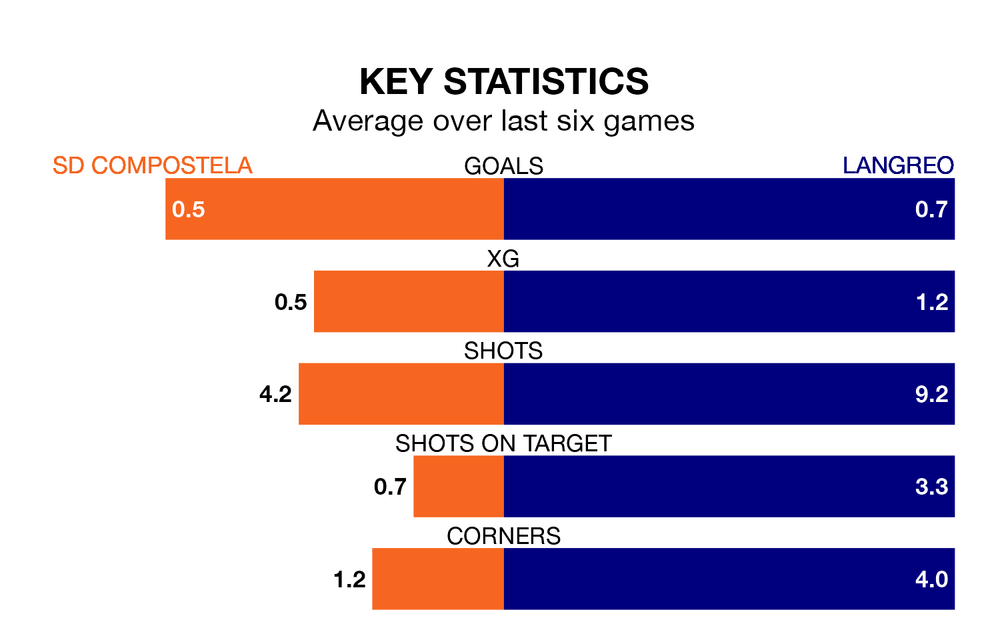

Langreo travel to SD Compostela on Sunday in the Segunda División RFEF Group 1.
The visitors come into the game on the back of a defeat in their last match, having lost to Covadonga 5-0 at home.
Compostela also lost their last match, 2-0 against Real Valladolid B.
In the last 10 years, Compostela and Langreo have played each other on nine occasions. They won three each, and they drew three times.
On average, Compostela scored 1.0 goal and Langreo 0.7 in those matches.
Their last meeting was on November 5, when Langreo won 1-0 at home.
Compostela are in disappointing form in the Segunda División RFEF Group 1, with one win and two draws from their last six games.
And also with a win and two draws over that period, Langreo's form is identical – they have both taken five points from 18.
With 25 goals in 26 games so far this season, the visitors are scoring at below the league average rate with 1.0 goals per game. And they are conceding more than average, letting in 35 goals at a rate of 1.3 per game.
The home side are also below average scorers, with 1.0 goal per game, compared to a league average of 1.1. They have also conceded 1.0 goal per game.
Compostela are sixth in the table after 26 games, of which they have won 10 and drawn six, earning 36 points.
Langreo are one place behind Compostela in seventh, with eight wins and 11 draws putting them on 35 points.
Updated: 15:10 (UTC), 15/03/24